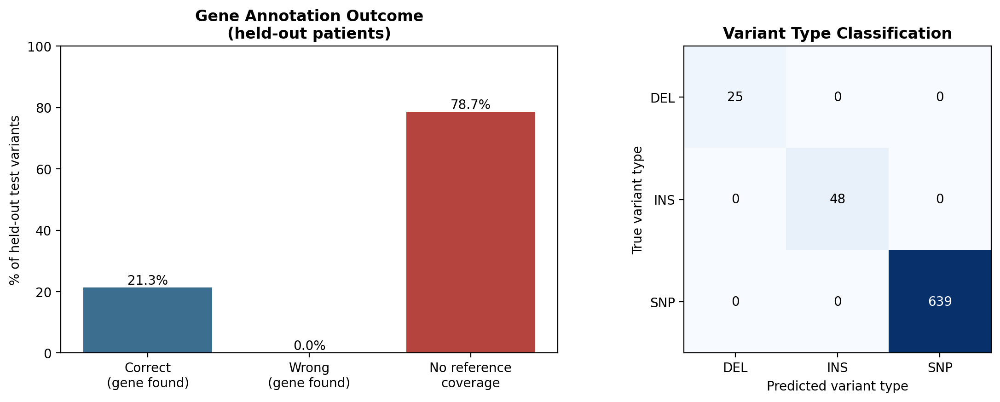

Variant Annotation Pipeline
Raw variant callers output only genomic coordinates and alleles — something like
chr17:7578403, C→T. They don't know which gene that's in or what it does
to the protein. Turning that into something useful is the job of an annotation
pipeline (real tools: VEP, ANNOVAR). This project builds a small one from scratch,
and validates it against the original MAF's professional annotations as ground truth.
Setup: hide the answers, then try to recover them
The MAF file already has the gene name and consequence for every mutation — using that would make this a lookup, not a pipeline. So the raw input is stripped down to only what a variant caller actually produces: chromosome, position, reference/alternate allele, sample ID. Everything else is rebuilt from scratch and checked against the hidden originals.
The patient cohort is also split train/test by patient (not by mutation row), so the pipeline is evaluated on patients it has genuinely never seen, the same way the Driver Mutation Classifier's train/test split works.
Stage 1: gene mapping
A gene reference table is built from the training patients only: for each gene, the min/max mutation position observed defines an approximate coordinate span (padded by 2kb). A held-out variant's gene is predicted by checking which span its position falls inside.
Stage 2: variant typing — and a real bug
SNP vs. insertion vs. deletion is decided purely by comparing reference and alternate
allele lengths. First pass got 15 deletions and 14 insertions wrong. The cause: MAF
format uses the literal character "-" to mean "zero-length allele" (nothing
there), not an actual one-character base. len("-") evaluates to 1 in Python,
so a deletion like ref="G", alt="-" was being read as two equal-length
one-character alleles — i.e. a same-length substitution, which the code then called
a SNP. Same category of issue as the -Inf placeholder handled in the
Survival Analysis project: a format-specific
placeholder that looks like real data unless you know to check for it.
ref_len = 0 if ref == "-" else len(ref)
alt_len = 0 if alt == "-" else len(alt)After normalizing both alleles this way, variant type classification reached 100% on the held-out set.
Results

The headline number that matters here isn't "21.3% gene accuracy" in isolation — it's the breakdown: when the reference table had an entry for the gene at all, the position lookup was correct 100% of the time. The failures are entirely a coverage problem, not a logic problem. This cohort has roughly 1,600 unique mutated genes across only 2,207 total mutations — most genes are hit exactly once in the entire dataset — so a train/test split on patients will always leave many test-set genes that the training patients simply never mutated.
This is precisely why real annotation tools like VEP and ANNOVAR don't build their gene reference from observed mutations at all — they use a genome-wide transcript database (RefSeq/Ensembl) covering all ~20,000 human genes regardless of whether any were mutated in a given study. This pipeline's simplification (building the reference from observed data) is the direct cause of its main limitation, and being able to name that cause — rather than just report a low number — is the actual point of the exercise.
What I'd extend next
Swap the homemade gene reference for a real genome-wide coordinate file (RefSeq or Ensembl GTF) to remove the coverage gap entirely, and add exon-boundary awareness so frame-consequence prediction accounts for intron/exon structure instead of raw position spans.